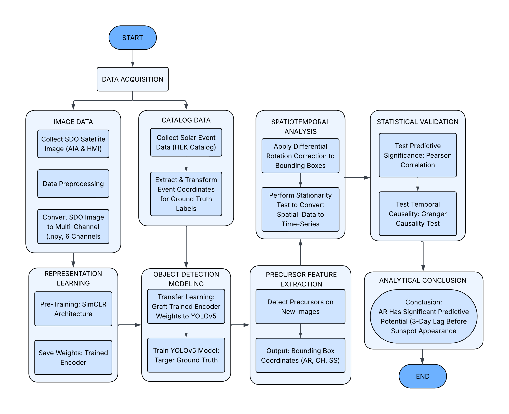

A physicist who builds things with data. Specializing in deep learning architectures, automated data pipelines, and computational modeling — from solar satellite imagery to production-ready applications.
I hold a Bachelor of Science in Physics from Universitas Pendidikan Indonesia, with a focus on computational physics and machine learning. My background trains me to approach complex systems analytically — a foundation I apply equally to scientific datasets and real-world software.
From processing tens of thousands of NASA satellite images to building a full-stack point-of-sale system deployed in an actual café, I'm driven by the challenge of turning raw data and ideas into working, meaningful systems.
Currently open to opportunities in data engineering, machine learning, and digital technology.
Two projects from opposite ends of the spectrum — one scientific, one commercial.

LYRA POS SCREENSHOT — REPLACE WITH YOUR IMAGE
Replace this block with: <img src="lyra_preview.png" alt="Lyra POS Interface">
Open to full-time roles, collaborations, or just a good conversation about data and physics.